Lesson content · 课文
Lesson 24: Give me/him/her/us/them some ... Which ones? · 给我／他／她／我们／他们一些……
Listen and answer the questions. 听录音并回答问题。
Which ones? 哪些？
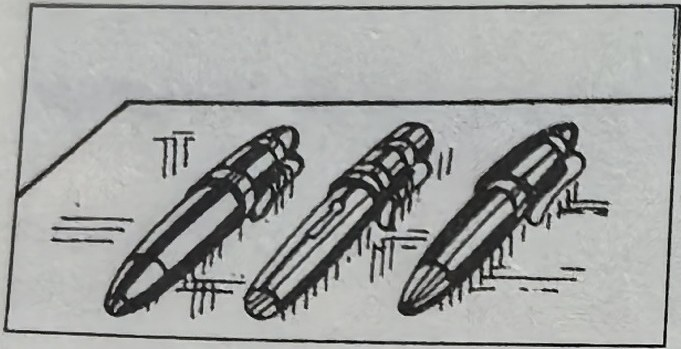
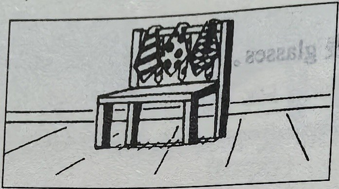
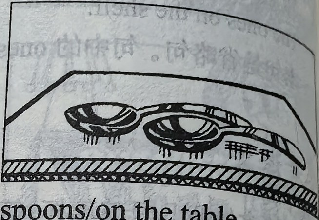
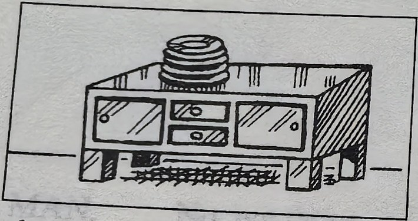
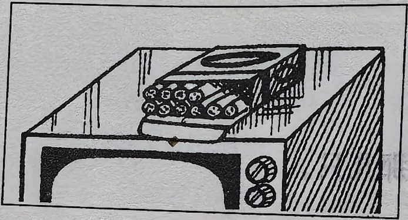
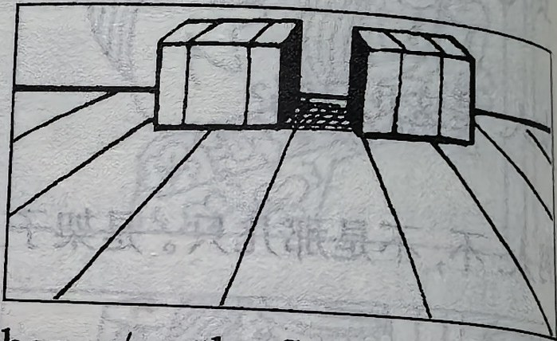
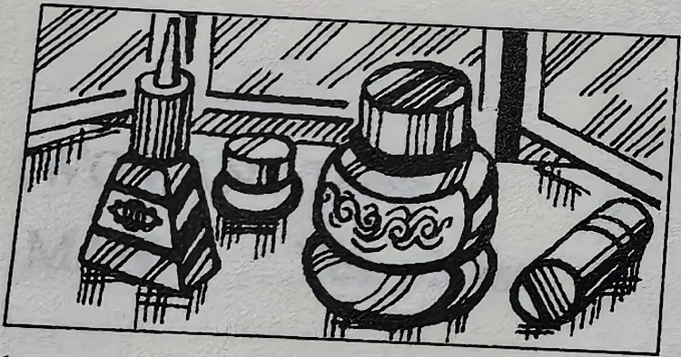
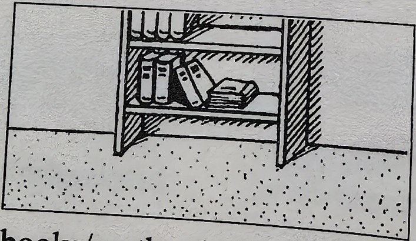
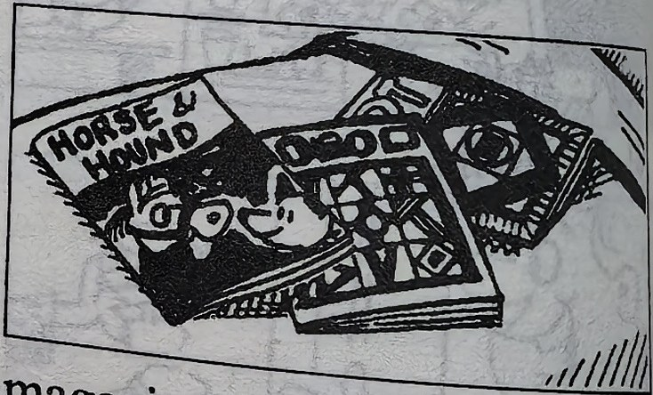
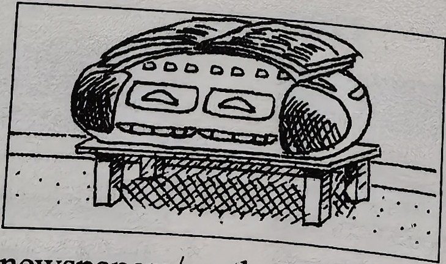
New words and expressions · 生词和短语
| Word · 单词 | Pronunciation · 音标 | Meaning · 词义 |
|---|---|---|
| desk | /desk/ | n. 课桌 |
| table | /ˈteɪbl/ | n. 桌子 |
| plate | /pleɪt/ | n. 盘子 |
| cupboard | /ˈkʌbəd/ | n. 食橱 |
| cigarette | /ˌsɪɡəˈret/ | n. 香烟 |
| television | /ˈtelɪvɪʒən/ | n. 电视机 |
| floor | /flɔː/ | n. 地板 |
| dressing table | /ˈdresɪŋ ˌteɪbl/ | 梳妆台 |
| magazine | /ˌmæɡəˈziːn/ | n. 杂志 |
| bed | /bed/ | n. 床 |
| newspaper | /ˈnjuːzpeɪpə/ | n. 报纸 |
| stereo | /ˈsteriəʊ/ | n. 立体声音响 |
Practice · 课文练习
Written exercises · 书面练习
A. Me, him, her, us or them
Complete these sentences using me, him, her, us or them. 完成以下句子，用 me、him、her、us 或 them 填空。
Example · 例句
Give Tim this shirt. Give him this one, too.
-
textbook: A. Me, him, her, us or them — Give Jane this watch. Give ____ this one, too.
-
textbook: A. Me, him, her, us or them — Give the children these ice creams. Give ____ these, too.
-
textbook: A. Me, him, her, us or them — Give Tom this book. Give ____ this one, too.
-
textbook: A. Me, him, her, us or them — That is my passport. Give ____ my passport please.
-
textbook: A. Me, him, her, us or them — That is my coat. Give ____ my coat please.
-
textbook: A. Me, him, her, us or them — Those are our umbrellas. Give ____ our umbrellas please.
B. Questions and answers · 对话练习
Write questions and answers. 模仿例句写出相应的对话。
Example · 例句
glasses / on the shelf
Give me some glasses please.
Which ones? These?
No, not those. The ones on the shelf.
-
textbook: B. Questions and answers · 对话练习 — pens / on the desk
-
textbook: B. Questions and answers · 对话练习 — ties / on the chair
-
textbook: B. Questions and answers · 对话练习 — spoons / on the table
-
textbook: B. Questions and answers · 对话练习 — plates / on the cupboard
-
textbook: B. Questions and answers · 对话练习 — cigarettes / on the television
-
textbook: B. Questions and answers · 对话练习 — boxes / on the floor
-
textbook: B. Questions and answers · 对话练习 — bottles / on the dressing table
-
textbook: B. Questions and answers · 对话练习 — books / on the shelf
-
textbook: B. Questions and answers · 对话练习 — magazines / on the bed
-
textbook: B. Questions and answers · 对话练习 — newspapers / on the stereo
Practice worksheet · 配套练习
A. Me, him, her, us or them
Fill in me, him, her, us or them. 完成以下练习。
-
worksheet: A. Me, him, her, us or them — Give the boy these pens. And give ____ these pencils.
-
worksheet: A. Me, him, her, us or them — Give Anna and me some magazines. And give ____ some newspapers.
-
worksheet: A. Me, him, her, us or them — Give the men these cigarettes. And give ____ some glasses.
-
worksheet: A. Me, him, her, us or them — Give the woman this blue book. And give ____ that black one.
-
worksheet: A. Me, him, her, us or them — Those are my books. Give ____ my books, please.
B. Structure
Write three-line conversations. 模仿例句完成以下练习。
Example · 例句
A: Give me some spoons, please.
B: Which ones? The ones on the table?
A: No, not the ones on the table. The spoons on the shelf.
-
worksheet: B. Structure — some magazines / the desk? / the television
-
worksheet: B. Structure — some books / the cupboard? / the desk
-
worksheet: B. Structure — some glasses / the shelf? / the table
Original images · 原图对照
Expand a page to compare it with the transcription. Open the original in a new tab to zoom in.
展开原图核对文字，也可以在新标签页打开原图放大查看。
Lesson text and oral practice · 课文与口头练习
Open original · 打开原图 ↗ Download original · 下载原图

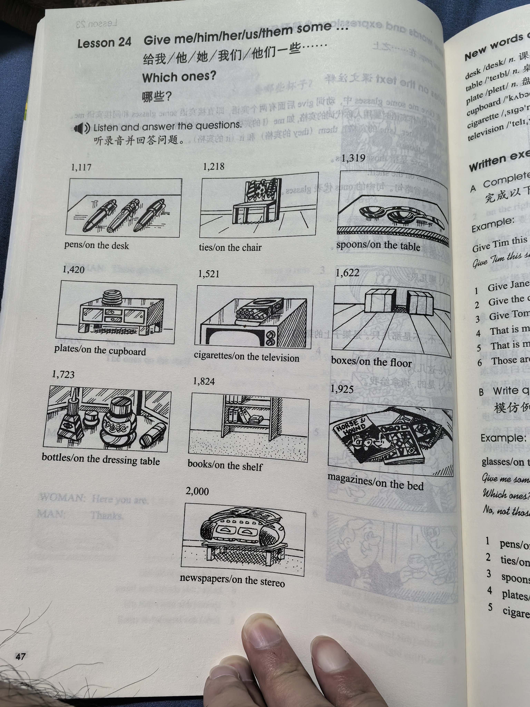
Vocabulary, notes and written exercises · 生词、注释与书面练习
Open original · 打开原图 ↗ Download original · 下载原图

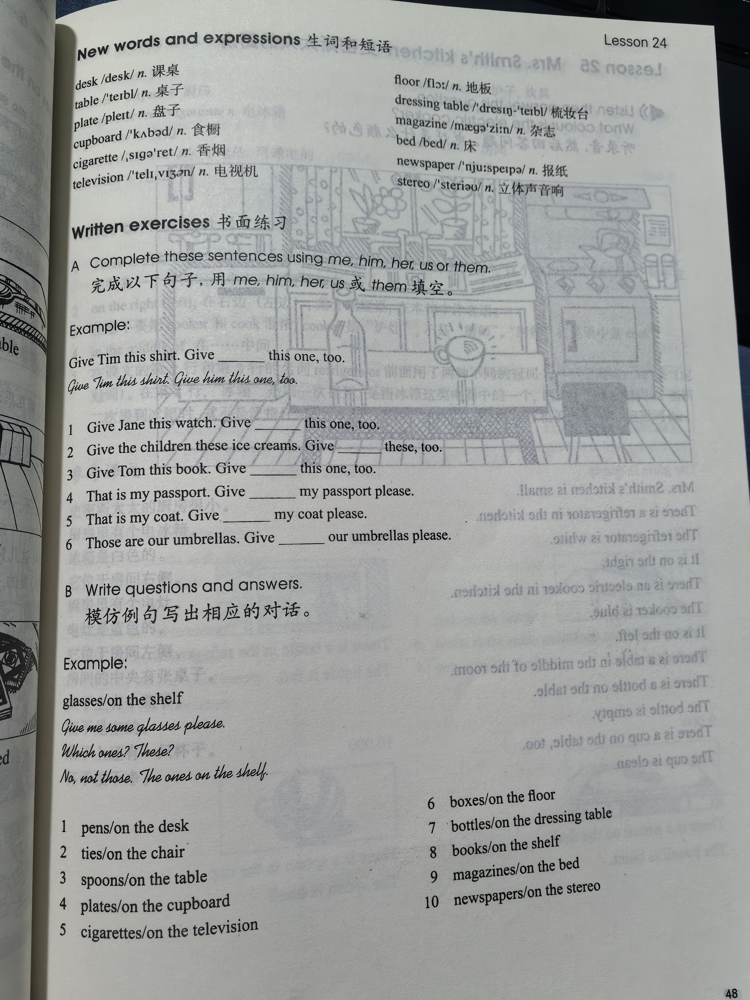

Grammar practice · 语法练习
I. Fill in the blanks with some, one, or ones
- Give me ___ knives and forks, please. Which ___? The ___ on the table.
- Give me a magazine, please. Which ___? The big ___ or the small ___? The small ___.
- Give us our umbrellas, please. Which ___? The ___ on the floor? Yes, the ___ on the floor.
- Give me ___ pens, please. Which ___? The blue ___ or the red ___? Oh, the red ___.
- Give me a tie, please. Which ___? A yellow ___ or a green ___? A green ___, please.
II. Complete the dialogues according to the example
Example: Give me some knives, please. Which ones? These or those? (blunt) -> These, please. Those are blunt.
- Give us some magazines, please. Which ones? These or those?
(very small) - Give me some glasses, please. Which ones? These or those?
(dirty) - Give us some cups, please. Which ones? These or those?
(old) - Give me some bottles, please. Which ones? These or those?
(full) - Give us some pens, please. Which ones? These or those?
(old) - Give me some spoons, please. Which ones? These or those?
(large) - Give me some plates, please. Which ones? These or those?
(small) - Give us some shirts, please. Which ones? These or those?
(white) - Give me some pencils, please. Which ones? These or those?
(red)
Your notes and answers
Use this space for longer responses or exercises that do not have an individual answer box.